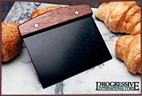

[This page is a mirror of this original]
Sometimes it isn't easy, living the PT life. Being mobile almost certainly means carrying as light a load as possible in order to facilitate fast, smooth jumps to the next destination. Paring down to those few essentials can be a challenge even for those not blessed with the pack rat gene. When it comes to the kitchen, the challenge can seem insurmountable, what with all the gadgets and special seasonings that may seem necessary to run a decent kitchen. Reality check: all that stuff sure can be nice, but you don't need it. A few basics, a few personal "must-haves", and some creativity are the essential ingredients to a successful PT kitchen. What you choose will of course depend on your PT situation, your cooking habits and preferences, and the number of people you're cooking for. My suggestions are intended to address general needs, and to spark your mind to help find creative solutions to your specific problems.
At the very least, you'll need to have a deep heating container and a shallow one. This can be as simple as a small pot and skillet. Depending upon the type of cookware you choose, its size, and its material, you may have all you need to cook whatever you might crave with those two items, or you may have stuff that's good for cooking only two things.
For a deep heating container, consider a wok--the kind that's designed for electric stovetops. They generally are large-volume containers, so you can heat up or prepare larger amounts of food quite easily. Smaller portions are also doable, as the wok has a fairly small surface area in contact with the burner or flame. (If cooking with one on a campfire, it's an easy thing to surround the wok with steady heat, decreasing cooking time considerably.) They can be used for soup-making, heating or steaming vegetables, cooking pasta--virtually anything a pot can do. In addition, because of their flared sides, they can be used in a pinch to fry things, such as eggs or hamburgers. If yours doesn't have a cover, try to devise a fairly tight-fitting cover for it, so that you can cook rice and do other things that need water trapped in. Don't just toss a metal sheet over it; the hot water will condense and react with the metal, dripping metallic water into your food. I haven't tried it, but as long as the handle of your wok is oven-proof, I should think there'd be no problems in baking in it as well (although you might need to adjust cooking times). Away from the heat, a wok can also serve as an unusual serving dish for salads and desserts, or with a little creativity, as a centerpiece for your table.
For a skillet, you can't beat good old cast iron for versatility. And I mean that literally--the old cast iron that is solid and can withstand high temperatures is more reliable and durable than much of the high-tech stuff being sold today (although Le Creuset does make wonderful, but pricey, cookware). From gently heating your morning eggs to searing a swordfish or beef steak, or doing morning griddle duties with pancakes, the iron skillet can handle it all easily. I've even seen one used to bake desserts in the oven.
The secret to its success is having a well-seasoned skillet. Seasoning is a process of heating the cast iron while covered with oil, so that the oil penetrates the skillet and makes it non-stick. A skillet can be seasoned over the course of frying things in oil in it (but this takes time and obviously, until it's seasoned, things will likely stick), or by cleaning the skillet, then coating it with cooking oil and placing it in a 350 F oven for an hour or so, then allowing it to cool in the oven. Once the skillet is seasoned, most foods won't stick to it, and even those that do will stick less.
To maintain the seasoning of your skillet, proper cleaning is essential. Never use soap or harsh scrubbing implements on your seasoned cast iron! The soap will remove all the oils you worked so hard to get into the skillet to season it; scrubbies have this tendency also. I've found two methods that work well to clean seasoned cast iron. First, if you can, remove the food from the skillet as soon as it's finished and swirl some hot water in it to keep stuff from sticking. Then take a dish cloth and rub over the skillet, being sure to get off any tenacious residues. Or, allow the skillet to cool completely, and use a spatula to loosen as much of the food residue as possible. Then clean, using hot water and a dish cloth. Whichever cleaning method you choose, use the minimum amount of hot water necessary; it too will strip the oils from your skillet. I've heard of people using salt and oil to scrub clean an iron skillet, but haven't tried it myself.
How do you find good old cast iron skillets? Garage sales and auctions are generally good bets (particularly estate sales of elderly folks). Flea markets may have them too, but because many of these old skillets are becoming collectable, they may ask what seems a high price. Unless it's completely outrageous, the price will be worth it for the flexibility a good cast iron skillet will give you in your kitchen. Even seemingly trashed iron, with lots of rust, can be successfully rehabilitated. (I did this with a very rusty and down-to-bare-metal small iron skillet by first "burning" it in a hot fire. This removed a lot of accumulated crud much more easily than scrubbing would have. Following that, I cleaned the skillet thoroughly and seasoned it [via the oven method] repeatedly to ensure a deep penetration of oil. It required some cooking [and some very gentle cleaning] to complete the seasoning, but that little iron skillet is now the preferred one for frying eggs, as it's just the right size.) "Junk" stores or thrift stores will have cast iron from time to time for just a couple dollars, as younger people give away the "dregs" of an elder's household, not realizing the value of well-loved cast iron cookware.
The optimal size of your skillet depends primarily on how many you're cooking for. Skillets range from small enough to hold one egg to huge ones designed specifically for campfire cooking for large parties. For most needs, a ten-inch-diameter skillet should do nicely. Do get a deep one, with a lid if possible, to increase its versatility.
The one negative I've found with cast iron cookware is that it is reactive, particularly when cooking acidic foods (spaghetti sauce or any tomato dish, for example). For some people, the slight iron taste isn't bothersome (for women it's a good way to get some extra iron), but some don't like it, and for men in general, taking in that iron isn't a good idea. If this is a concern for you, get a nonreactive, heavy skillet for your cooking. Porcelain skillets are okay; they're nonreactive but have a tendency to burn foods even at low temperatures, and generally don't hold and distribute the heat as well as iron. Stainless steel doesn't distribute heat well, and can't be seasoned. Aluminum is acceptable (barely). If you want to make an investment of your skillet, consider a Le Creuset skillet. They offer a variety of models and sizes, all of high quality--each comes with a 101-year guarantee. My recommendation is to choose one from their cast iron with enamel finish line, with a metal handle for maximum flexibility. Many of these also come with lids, adding to the versatility of the skillet. (The Le Creuset Web site isn't set up at present to accept orders, but if you do an online search for "Le Creuset", you'll find several cookware and outlet stores that carry it. Shop around; prices do vary.)
Both of these suggestions are well-suited for a variety of PT situations, from on the road and living out of a vehicle, to country-hopping and needing to take one's supplies to each destination. If you've the option for more equipment, consider what your needs are and invest in what will meet them best. If you like to cook soups and stews in quantity to store them, having a nonreactive stockpot is a good idea. Other specialty items can be geared toward specific foods that you can't or won't live without: cookie sheets; pans for cake or pie baking; or gelatin molds are a few that come to mind. Just remember--you'll be carting this stuff around, so it ought not attract feral attention (particularly at border crossings where guards may decide to seize your mother's antique pizelle maker), and it ought to get enough use to warrant the weight.
I'll confess at the outset that I am a gadget junkie--I love all the different specialized tools for the kitchen, and back when I had the space and income, I bought lots of them. Most are very handy, and good at doing their specific job: my beloved garlic press comes to mind. Others seem silly to me--I mean, is it really necessary to have a mushroom brush to clean one's mushrooms? I think not. Despite the availability of these tools, a PT kitchen can be a highly functional one without all the specific gadgets and toys available.
You will need knives, and as they'll probably see fairly regular duty, make them good-quality knives--buy the best you can afford (and can afford to replace, should they attract a thief's eye). I know knives typically come in sets, with each knife geared toward specific uses, but unless you'll be doing each of those tasks regularly, you don't need the complete set. At a minimum, I recommend a chef's knife, which will be the workhorse of your kitchen, a cleaver, and a serrated knife. The cleaver is essential for heavy duties, such as hacking large pieces of meat or fowl into smaller portions, or cutting through bone. It can serve as backup for your chef's knife on several tasks. It also substitutes well for a machete, if you ever need to hack through some jungle or open a coconut. A good smack with the wide edge of your cleaver to a clove of garlic serves the same function as a garlic press. The serrated knife, depending on how wide it is, is useful for slicing breads, cheeses, and is handy for dipping into pots of pasta to grab a strand or two to test for doneness (slice through the water with the serrated edge up to snag some pasta). I expect most folks know how handy chef's knives are for general cutting tasks, such as preparing vegetables for soups or salads, but they're well-suited for a myriad of other tasks, too. Anything that can be accomplished with the back-and-forth motion a chef's knife can perform is fair game. They can be used to debone meats and poultry, or to peel fruits and vegetables. If you're willing to invest some time and thought into it, you'll find that you can extend the versatility of your chef's knife by considering ways to use the entire blade, rather than just the middle segment. I've seen Mexican cooks, for example, do amazing things with the tip of a chef's knife. And of course, you should have a good pocket knife (Leatherman or Swiss Army ) to suit your general needs that you can call upon for various kitchen duties too.
Good quality utensils that can be used in your cookware are important. I prefer wooden tools for most tasks, because they're generally excellent, are quite versatile, and the handle won't heat if the utensil's left in the pot. You can buy a really cheap set from Wal-Mart or its equivalent, but you'll need to check them for rough edges, and they'll need to be seasoned before use. Seasoning involves soaking and/or rubbing them with oil so that it permeates the wood, making them less likely to pick up colors and odors of foods and easier to clean. (Speaking of cleaning, never soak your wood utensils in water! Over time, that will damage them irreparably. Immerse them to clean them, then rinse and allow to air dry, or dry with a towel.) Decent quality utensil sets can be found at almost all general cookware stores; these likely won't need to be sanded before use, but may need some seasoning. If wood utensils are all you'll use, consider olive wood (or visit this online merchant; it's a particularly tough wood that makes terrific cooking utensils.
You'll need a turner that won't harm your skillet, but that is tough enough to scrape out crud, or to lift heavy items. Some plastic models are sturdy enough to do this, but many aren't, and there's really no way to know without buying and testing. I prefer metal ones, with a thin edge so that flipping pancakes is easy. Having two turners, one for lighter duty and one for heavier tasks, probably is a good idea.
Or, consider buying a bench knife, shown below. These are flat rectangles of metal with a wooden handle, and are used most for scraping together doughs and for cleaning up after same. However, these are very handy, flexible tools. They're great for cleaning up a large variety of messes, have an edge sharp enough to slice pizzas, brownies, or other goodies, and can in a pinch be used in place of a turner. Bench knives come in a variety of sizes, so before purchasing consider all the possible uses yours might see in order to select an optimal size.

Measuring cups and spoons are essential if you follow recipes or prepare items that require careful measurements. Regarding measuring cups, although ones for dry measure can be used to measure liquids, it is true that because of the differences in measuring, this can lead to inaccuracies. If you do a lot of "precision" cooking, having a glass cup (of at least two-cup measure) for liquids and a set of plastic cups for dry measure is a good idea. The glass measuring cup can be put in the oven or microwave to warm things, saving the need to dirty a bowl for that purpose. If you buy a larger measuring cup (say, four cup volume) and are cooking for few people, it'll be large enough to be a mixing bowl in its own right for some things, such as scrambled eggs or pancakes. I recommend having measuring spoons that are linked together so that one or more don't get lost in your travels.
Some specialty gadgets may be worth toting around, either because they're versatile or because you'll use them enough to make it worth your while. A wire whisk is one to consider. You can do the same things with a fork (or small handheld mixer if you have one), but the fork will take longer and develop your forearm muscles more. Is the time saved by a whisk over a fork worth it to you? Or would a mixer be best for your needs? A pastry blender is very handy for pie and pastry crusts, but is suitable for other mixing tasks as well; a good one can serve as a slicer (making somewhat thick slices) in a pinch. A fork can do serviceable stand-in duty for a pastry blender, though. Many corkscrews also have other functions, such as bottle cap removers. A melon baller is an extremely versatile little gadget. Some plastic sheeting, around 8 millimeters thick, will also serve many purposes (think dough making, cookie and pastry rolling, etc.) and can be bought cheaply at a home supply store. A small coffee grinder will do your morning duties, plus handle spices or other grating tasks. A colander strains your pasta, and can work well as a sieve; if it's metal or enamel and fits into a pot it'll serve nicely as a steamer too. (I've even used ours to make homemade applesauce.) If you do a lot of baking, having an oven thermometer so that you can verify the temperature of the ovens you use is an excellent idea. This is especially important if you're traveling overseas, where temperatures might be marked in centigrade, and gas pressure or electrical fluctuations can make it very hard to figure out just how hot an oven is.
What do you use in your kitchen now? Is there any way to consolidate your gadgets without losing functionality? Sure, it's nice to have a food processor and a mixer that's capable of kneading bread doughs, but carrying around that stuff gets bulky quickly, and the more cooking items you have, the higher the likelihood you'll come to the attention of the ferals as you cross from place to place (even if it's just in the US, and you're stopped for whatever reason; if the thought police see your equipment, they're liable to get suspicious). Normal vacationing tourists just don't carry portable kitchens with them.
The possibilities are simply too large to consider every item and every size of kitchen tool. I hope I've at least helped you to start looking at your kitchen equipment with an eye toward reducing redundancies and lightening your load for the road. When choosing among the things you own, or selecting items to buy, consider weight and flexibility. Try to maximize the versatility of each piece of equipment, particularly if it's a heavy piece. In general, I prefer glass (enamel, ceramic, etc.) items because they're useful in a wide variety of conditions and are nonreactive. For example, a 9 x 12-inch glass baking dish is superb for casseroles, will do cakes very nicely, and can handle lasagna without imparting a metallic flavor. However, glassware can get heavy; if you need a variety of equipment, it might be a worthwhile tradeoff to have some items (mixing bowls, for example) in metal (aluminum or copper). Except for specific things such as spatulas, I don't care much for plastic—it's fairly easy to destroy and can pick up oils, colors, and odors from some foods. But it's very light, and generally unlikely to be coveted by border guards. Depending on your needs, such things may or may not be important, but at least you'll have considered the options and made an informed decision.
Next time I'll consider another aspect of the well-equipped kitchen--the food, ingredients, and spices you want to have readily available.
(c) 2000